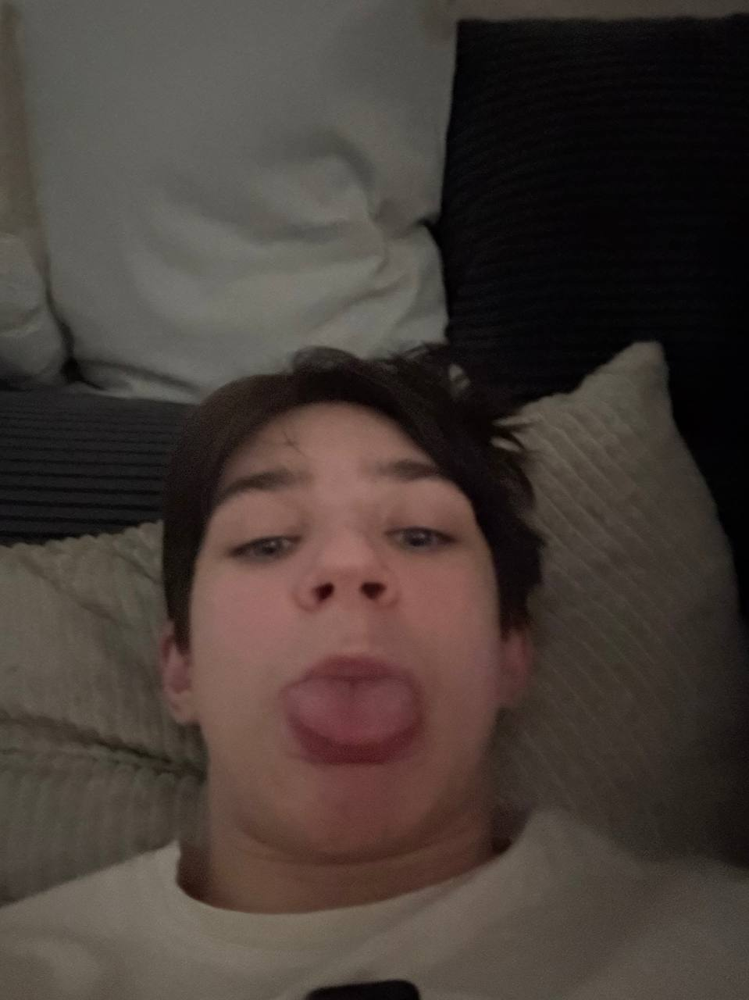
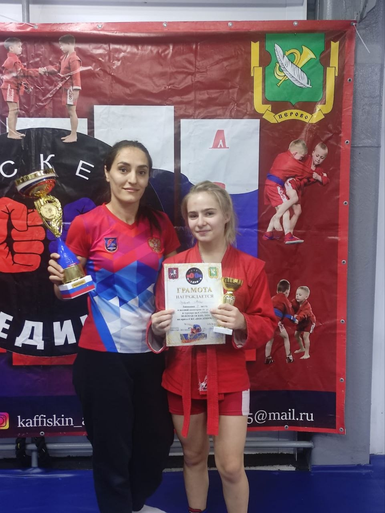
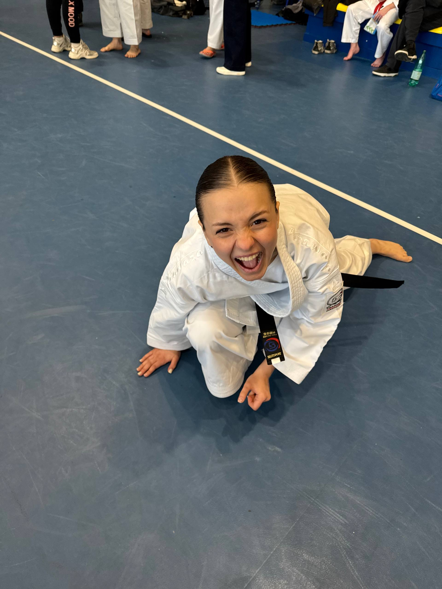
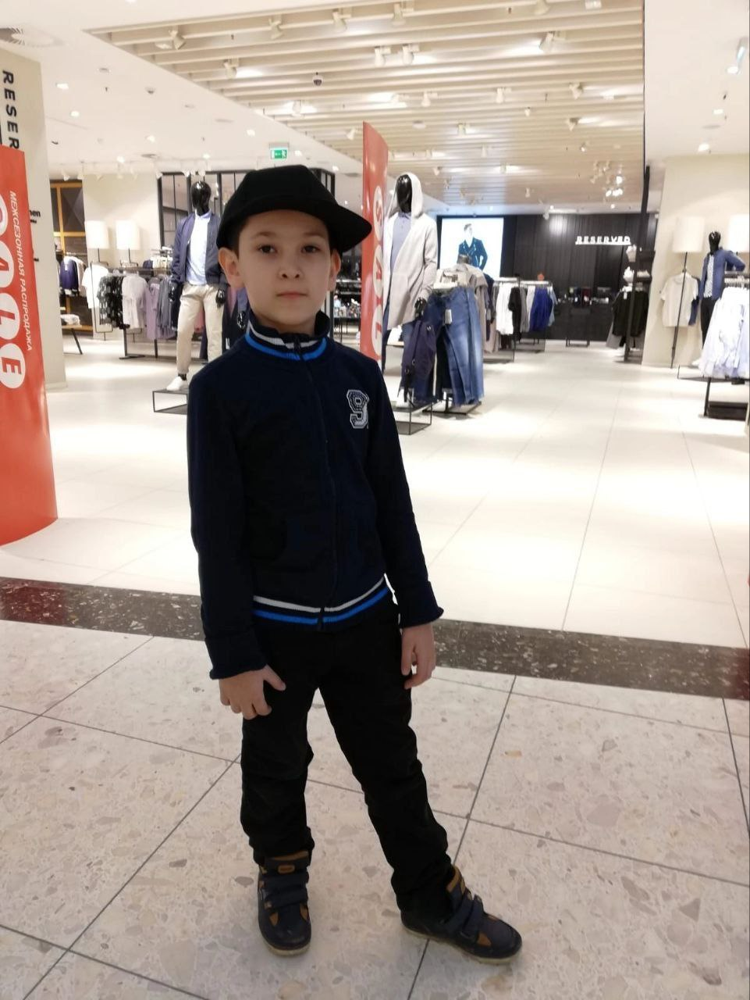

Твой психологический тренер в единоборствах
Победи страх, волнение и неуверенность. Дыхание, визуализация и мотивация для бойцов — всё в одном месте. Бесплатно.
Начать подготовкуКому и зачем?
Для спортсменов 10–16 лет
Боишься пропустить удар, волнуешься перед выходом или не знаешь, как настроиться после поражения? Мы собрали рабочие техники от спортивных психологов.
Для всех единоборств
Бокс, дзюдо, карате, тхэквондо, самбо, кикбоксинг, MMA — проблемы у всех одинаковые. Наши упражнения подходят любому бойцу.
Бесплатно и без регистрации
Дыхательные аудиогиды, чек-листы, аффирмации — доступны в один клик.
Что внутри?
⚔️ Подготовка к соревнованиям
Дыхание «Квадрат», визуализация боя, чек-лист экипировки. Снизь стресс за 5 минут.
Перейти🥋 Тренировки
Как не бояться спарринга, концентрация внимания, постановка целей. Прокачай психику.
ПерейтиПопробуй прямо сейчас — дыхание за 1 минуту
Квадратное дыхание помогает успокоиться за несколько циклов.
Вдох (4) → Задержка (4) → Выдох (4) → Задержка (4)
Повтори 3–5 раз.
Больше техник в разделе «Подготовка»Что говорят спортсмены?
«Я постоянно нервничал перед соревнованиями, а дыхательные упражнения реально помогли успокоиться»
— Андрей, 14 лет, бокс«Сайт ещё в разработке, но уже понял: мне не хватало визуализации. Теперь представляю бой до выхода»
— Карина, 15 лет, тхэквондо📊 По данным нашего опроса, 85% юных спортсменов испытывают сильное волнение перед стартом.
О проекте MentalWin
Мы создали этот сайт, чтобы помочь юным бойцам справляться с соревновательным стрессом и раскрывать свой потенциал.
Актуальность
Каждый юный спортсмен-единоборец хотя бы раз испытывал сильное волнение перед соревнованиями. Страх пропустить удар, потерять концентрацию — знакомые чувства. До 85% спортсменов сталкиваются со стрессом, но в спортивных школах редко учат управлять состоянием. MentalWin закрывает этот пробел.
Цель и задачи
Цель: Разработать сайт для психологической подготовки юных спортсменов-единоборцев.
- Изучить психологические трудности юных бойцов
- Собрать эффективные техники (дыхание, визуализация, аффирмации)
- Создать удобный сайт с доступом к ним
- Проверить, помогает ли сайт справляться с волнением
Для кого этот сайт?
- 🥊 Юные спортсмены 10–16 лет
- 🥋 Тренеры для работы с командой
- 👨👩👧 Родители для поддержки детей
Сайт подходит для любых единоборств: бокс, дзюдо, карате, тхэквондо, самбо, кикбоксинг, MMA и другие.
Команда проекта

Глущенко Кирилл
Создание сайта, продумывание дизайна

Огурцова Мария
Планирование проекта, распределение обязанностей

Верхозина Анна
Поиск информации, анкетирование

Магомедов Али
Продумывание и реализация презентации
Проект разработан командой энтузиастов спортивной психологии.
Продукт проекта
Сайт включает разделы: Мотивация, Подготовка к соревнованиям, Тренировки, а также интерактивный чек-лист и дыхательные упражнения.
Мотивация для бойца
Настрой себя на победу. Аффирмации, цитаты чемпионов и дневник успеха.
Аффирмации — сила твоих слов
Короткие фразы, которые заменяют негативные установки. Повторяй каждый день перед зеркалом.
- Я спокоен и уверен в себе.
- Мои удары точны и сильны.
- Я контролирую свой страх — страх не контролирует меня.
- Каждая тренировка делает меня сильнее.
- Я достоин победы.
- Мой дух не сломить.
- Я вижу цель и достигаю её.
- Я готов к любому вызову.
Цитаты чемпионов
«Страх — это не враг. Это топливо. Ты либо используешь его, либо он сжигает тебя.»
— Конор Макгрегор«Чемпионом становится не тот, кто никогда не падал, а тот, кто каждый раз вставал.»
— Майк Тайсон«Победа не главное. Главное — стать лучше, чем ты был вчера.»
— Хабиб Нурмагомедов«Настоящий боец держит удар не телом, а духом.»
— Фёдор Емельяненко«Неважно, как сильно ты ударил. Важно, как сильно ты можешь ударить и при этом продолжить идти.»
— Сильвестр Сталлоне (Рокки)Дневник побед
Каждый день записывай 3 вещи, которые получились хорошо. Это укрепит веру в себя.
Пример:
- 15.04 — Чётко отработал связку → 8/10
- 16.04 — Не боялся идти в атаку на спарринге → 9/10
Скачай шаблон (PDF) — скоро появится.
Подготовка к соревнованиям
Снизь стресс, настройся на бой и выложись на 100%.
🥋 Чек-лист: что взять на соревнования
Поставь галочки — и будь спокоен!
✅ Сохрани страницу в закладки — возвращайся перед каждым стартом!
Дыхательные упражнения
Квадратное дыхание (успокоение)
Вдох (4) → Задержка (4) → Выдох (4) → Задержка (4). Повтори 5–10 раз.
Боевое дыхание (мобилизация)
Резкий вдох носом → мощный выдох ртом «ХА». 5–7 раз перед выходом.
Визуализация боя
Закрой глаза, представь зал, соперника, свои уверенные действия и победу. Делай за день до старта и утром.
Психологическая разминка за 5 минут до выхода
- 1 мин: Квадратное дыхание
- 1 мин: Боевое дыхание
- 1 мин: Аффирмации («Я готов», «Я сильнее страха»)
- 1 мин: Лёгкая растяжка + улыбка
- 1 мин: Визуализация первого удара
Что делать после поражения
1. Успокойся (вода, дыхание).
2. Прими поражение — это опыт.
3. Найди 2 ошибки и 2 успеха.
4. Поблагодари соперника и тренера.
5. Переключись на отдых.
Поражения есть у всех. Чемпион встаёт и идёт дальше.
Тренировки
Прокачай не только тело, но и психику. Упражнения на концентрацию, борьбу со страхом, постановку целей и работу с усталостью.
🎯 Постановка целей по SMART
Цель должна быть конкретной, измеримой, достижимой, релевантной и ограниченной по времени.
Плохая цель: «Хочу лучше бить ногами».
Хорошая цель: «За ближайшие 2 недели на каждой тренировке отработаю маваши-гери 20 раз на правую ногу и 20 раз на левую, добиваясь точности попадания по лапе».
Записывай цели на неделю и отмечай выполнение.
🧘 Концентрация внимания
Упражнение «Точка»: Нарисуй на стене точку или приклей стикер. Сядь напротив, смотри на точку 30 секунд, стараясь не моргать и не отвлекаться. Постепенно доводи время до 2 минут. Это тренирует устойчивость внимания перед боем.
Упражнение «Счёт ударов»: На спарринге сосредоточься только на одном — считай, сколько ударов ты нанёс за раунд. Это помогает не отвлекаться на эмоции.
😨 Как не бояться спарринга
Страх — это естественная реакция. Вот пошаговая техника укрощения страха:
- Назови страх: «Я боюсь пропустить сильный удар».
- Оцени риск реально: У тебя есть защита, капа, шлем? Ты не на войне — это тренировка.
- Переведи внимание на действия: Вместо «что будет, если…» думай «какое движение я сделаю сейчас».
- Дыши как боец: 3 коротких вдоха + сильный выдох — и в бой.
Начинай спарринг с теми, кто немного слабее, чтобы почувствовать уверенность. Потом постепенно повышай уровень.
⚡ Работа с усталостью (аутогенная тренировка)
Между раундами или интенсивными упражнениями используй быструю релаксацию:
- Сядь, закрой глаза. Сделай 3 глубоких вдоха.
- Мысленно скажи: «Мои руки тяжёлые и тёплые», «Мои ноги расслаблены», «Я восстанавливаюсь».
- Повтори каждую фразу 2-3 раза.
- Через 30-60 секунд открой глаза и сделай резкий выдох — готов двигаться дальше.
Это снижает пульс и возвращает ясность мышления.
📈 Дневник тренировок
Записывай после каждой тренировки:
- Дата, вид тренировки (ОФП, спарринги, техника)
- Что получилось лучше всего (даже мелочь)
- Над чем нужно поработать (1-2 пункта)
- Оценка настроения/энергии от 1 до 10
Пример: «15.05 – спарринг. Хорошо сделал защиту уклоном. Плохо — мало джебов. Настроение 7/10».
Регулярные записи помогают видеть прогресс и не зацикливаться на неудачах.
🧠 Идеомоторная тренировка (мысленная подготовка дома)
Ты можешь тренироваться даже лёжа на диване. Закрой глаза и мысленно выполняй движения: удар, блок, перемещение. Представляй каждую деталь — напряжение мышц, траекторию, контакт с целью. 5–10 минут такой тренировки улучшают реальную технику.
Проверено исследованиями: мозг не отличает реальное действие от воображаемого.
🔄 Разминка психики перед тренировкой
Перед выходом в зал выполни ритуал:
- 1 минута — боевое дыхание (вдох носом, резкий выдох «ХА»)
- 1 минута — повторение 2-3 аффирмаций («Я становлюсь сильнее», «Я концентрируюсь»)
- 1 минута — лёгкая растяжка шеи и плеч
Это переключит мозг в режим работы.